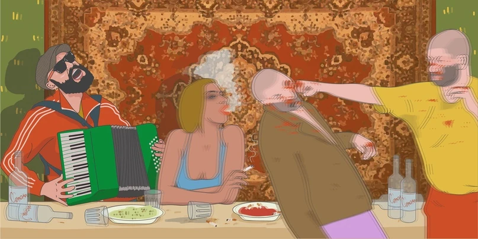

На днях легендарные московские панки, группа «Голос Омерики», выпустили свежую пластинку под названием «Спорт». В честь этого события давний фанат их творчества Данила Блюз побеседовал с лидером коллектива Родионом Лубенским. О том, как работалось над альбомом, о новых рэперах, фестивале «Нашествие», годных хоррорах и о многом другом.

— Ну что, рассказывай, как создавался новый альбом, какие муки творчества пришлось преодолевать.
— Писался он с марта. Получается, где-то месяцев пять мы на него угрохали. Шло, кстати, легко, весело. Единственная проблема — даже не проблема, а данность такая — у нас в группе-то дохера инструментов, а в студии их еще больше. Это с технической стороны заебывает. Но в целом все со своей задачей справились. Правда, альбом отличается от того, что мы делали раньше…
— В плане звучания, ты имеешь в виду?
— Да, да. Я просто подумал: «Можно написать еще одну «Клюкву» (альбом «Голоса Омерики» 2015 года. — Примеч. авт.). Ну и нахуя она нужна? Еще один «Хардкор» (альбом «Голоса Омерики» 2017 года)... Тоже — зачем?» Хотелось сделать что-то новое. Просто у нас, когда кто-то шаг вправо или шаг влево делает, все начинают возмущаться. А музыканту же не хочется топтаться на одном месте и заниматься самоповторами!
— Ну знаешь же, фанаты — народ консервативный.
— Это да!
— Ты говорил как-то, что на тебя все ополчатся после новой пластинки. Ты имел в виду, из-за необычного звучания?
— Да.
— А-а-а, а я-то думал, там будет какая-то идеология…
— Да нет там никакой идеологии. У нас идеология одна: долбоебизм. А что до публики, то для меня удивительно, что народу альбом зашел.
— Да, я смотрю, у тебя в сториз много положительных отзывов.
— Я думал, что меня сожрут за это. У нас ведь юмора никто не понимает. Мы чуть рок-н-ролла поддали, и я решил, что нас теперь начнут относить куда-то в сторону супер-гитарной музыки. А мы просто решили поэкспериментировать со звучанием. И не факт, что «Голос Омерики» будет развиваться в этом ключе.
— Говоря об экспериментах. Как обстоят дела с проектом GALAGA (сольный рэп-проект Родиона Лубенского. — Примеч. авт.)? Будешь его дальше развивать?
— Конечно! Вот сейчас мы им и занимаемся, скоро можно будет ждать новые треки, у нас есть идеи свежие. Просто «Голос Омерики» сжирает кучу времени, народа много задействовано, не остается сил заниматься сторонними проектами. А теперь, когда я альбом выпустил, есть возможность, грубо говоря, год нихуя не делать и заниматься тем, что мне интересно.
— Я помню, ты как-то говорил, что начал делать этот проект, потому что рэперов нормальных нету.
— Ты про GALAGA? Нет, это изначально была шутка такая, а не какой-то серьезный проект с посылом и прочей херней. Я давно люблю олдскульный рэп, а сейчас он ведь никак не представлен. У меня долго лежали «в столе» два текста, и я не знал, что с ними делать.
А тут как-то мы с товарищем сидим, выпиваем, и я говорю: «Давай рэп запишем», а он мне: «Ты ебанулся, что ли?» В итоге записали и всем зашло, все поржали. Тут же видишь как? Мне по большому счету похуй, что рэп, что не рэп — все равно одно и то же получается. Неважно, в какую музыку ты это завернешь. Для меня текст первичен, а уж подо что я его пою или читаю — под гармошку или под бит — это не принципиально.
— GALAGA ты делаешь с кем-то или один? Сам тексты и биты пишешь?
— Все сам, разве что мне помогает со стороны наш гитарист Слава — занимается сведением.
— Возвращаясь к вопросу о современных рэперах... Ты и правда считаешь, что сейчас нет нормальных рэп-исполнителей? Или все же каких-то слушаешь?
— Ну естественно, каких-то слушаю, чтобы быть в курсе. Может, это уже какая-то пенсионерская херня у меня началась, но одно время я прямо орал благим матом от нынешних рэперов: «А-а-а, блядь, говнище какое-то, а не рэп!» А тут че-то послушал, какую-то молодежь — ну все вот эти вот «Биг Бэби Тэйпы», — ничего, есть забавные у них… штуки. Хаски очень даже ничего. Правда, он такой альтернативный, у него довольно сложная музыка…
— Да он и парень какой-то непростой.
— Ну да. «Каспийский груз» я еще лет 10 назад слушал, даже живьем. Очень мне нравится «Лед-9», это которые «25/17». Музыка мне очень заходит, юмор у них такой забавный. Просто много чернухи-депрессухи, а вот когда они делают что-то шуточное, нестрашное — у них здорово получается. Не, в целом нормально все у нас с рэпом.
— А как тебе нашумевший клип Тимати с Гуфом?
— Это который с бургером за Собянина? Ну это очень смешно. Понятное дело, Тимати как обычно хотел лизнуть поглубже, но в этот раз перестарался. Я не буду говорить, что он какой-то там… Тимати вообще спорная фигура. Нельзя доверять человеку, который полжизни притворялся негром, сейчас притворяется чеченцем, а на самом деле еврей.
Я очень смеялся с этого клипа. Все там чего-то ругались, что, дескать, Тимоти продался. Да ладно, ребята, он уже 100 лет как продался!
— А слышал Канье Уэста новый альбом? Он в один день с вашим вышел.
— Не, не слыхал, надо послушать.
— Там тоже его ругают, мол, про Иисуса своего тут нам телеги толкает.
— Да это ж вообще вечная тема! У нас же рокеры тоже с ума начинают сходить после 40. Кинчевы все вот эти… То Сатана-Вельзевул, то все, пиздец, женский монастырь. И рэперы, видишь, не чужды этому. Да вот того же Фейса возьми! Начинал как такой панк-отморозок, а прошло два года — и он сидит там, чего-то выебывается про Болотную площадь. Трушных музыкантов нету. Я, конечно, пытаюсь дух сохранять, но таких немного, как я. Мне же постоянно друзья, знакомые, кореша-музыканты говорят: «Ну хорош ты уже жестить, еб твою мать! Ты же можешь попроще, попонятнее, чтобы в телевизор...» Да пошли вы на хуй со своим телевизором!
— Слушай, а вот если бы тебя в «Вечерний Ургант» позвали и сказали, что можно спеть любую песню из репертуара, прям вообще любую, без цензуры, какую бы спел?
– Опа! Прям любую? Надо подумать... «Отморозок», наверное.
— О, нормально, все бы точно охуели.
— Это да.
— А что насчет Роскомнадзора скажешь? Не боишься, что, как Хаски, например, понравишься какому-нибудь прокурору, начнут твои песни вносить в реестры, запрещать концерты, таскать тебя по кутузкам?
— А что их бояться? Как говорил Карабас из «Хуй забей», «Я их при сталинизме не боялся, а сейчас и подавно». Понимаешь же, что любое подобное внимание к нам сделает нас популярнее.
— Я/Мы Родион Лубенский! Хе-хе.
— Да, да, да. Знаешь, как говорят? Зубов бояться… Не, надо либо делать, либо не делать. И потом, что у меня такого страшного-то?

— Ну как, антиЗОЖ проповедуешь! Доебаться могут.
— Пока, тьфу-тьфу-тьфу, никто не доебался. Те, кто доебывается, не понимают, что тем самым создают рекламу.
— Как с Павленским тем же самым...
— Да кому он был нахер нужен?
— Сейчас зато сидит себе тихонько в тюрьме во Франции, и всем на него поебать.
— Ага, художник, бля, великий.
— К слову об искусстве. Вы сняли классный клип на песню «Ирина», и там в нарезке в титрах были фото со съемочной площадки. Вы серьезно подошли к процессу — раньше снимали чуть ли не на мобилу, а теперь у вас там камеры, свет, все дела…
— Если говорить о технической стороне дела, то мы по-прежнему пользуемся самыми простыми, доступными средствами. Другой вопрос, что мы специально хотели снять «Ирину» как пародию на дешевые хорроры 80-х годов. Правда, большую часть клипа ничего не происходит.
— Да, мне хотелось бы побольше мяса, а там всю дорогу чел на велике едет.
— Есть такое. Я просто хотел снять что-то в духе... может, помнишь давнишний клип чувака по имени Uncle?
— Это где мужик по автостраде идет?
— Да, да. И мне хотелось того же, чтобы чувак всю дорогу ехал куда-то на велосипеде и интересно было, что же там в конце-то будет.
— У Дэвида Линча клипы такие, только в конце ни хера не происходит.
— Он уже в том статусе, когда можно ни хера и не делать.
— Когда все, что ни сделаешь, охуенно.
— Да, да!
— Вы в этом году выступали на «Нашествии» же?
— Да, это уже второй раз.
— Тем более! Как вас вообще туда пригласили? Была ли цензура какая-то относительно песен?
— Нет. Вот как на духу скажу: на «Нашествии» никогда никто нам не указывал, что можно, что нельзя. Никакой литовки, никакой цензуры не было. В этом году фестиваль мне понравился больше, чем в прошлом. Бытует такое мнение, что «Нашествие» — это грязный обрыганский бомжатник. Его ругают очень активно, но, мне кажется, делают это те, кто там не был. В этом году я побывал на разных фестивалях в разных странах. И то, что сделали на «Нашествии», очень круто. Никаких рыгаловок с пивом «Клинское» нет, всюду модные такие домики хипстерские — с едой, с пивом. Отличные две сцены. Сцена «Ультра», где мы играли, — вообще огонь. Самый пьяный там был, наверное, я. Серьезно говорю. Никаких бомжей, никто в грязи не валяется, на себя не блюет. Все цивилизованно и прилично.
— А помнишь там бойкот музыканты объявляли, из-за участия в фестивале Министерства обороны? Это в этом году было?
— Не, в прошлом…
— А, ну да, в прошлом. Что думаешь по этому поводу?
— Я же был на этом «Нашествии», мы там играли. И я пошел со Славиком Ширинкиным из CWT искать эту пресловутую военную технику. Нам понадобился час для этого. Она стояла там на выселках, в жопе. Одна «катюша», одна какая-то зенитка и какой-то еще там маленький прицепчик. Все! Вот и вся война. Ну летали там эти «Стрижи», показывали фигуры высшего пилотажа. Ну а что такого? Круто же! В чем проблема? Нет там никаких призывных пунктов! Это все гонево раздутое.
— Переврал, значит, телеканал «Дождь»?
— Переврал! «Дождь» еще не так может, ты же знаешь. А что касается бойкота, я считаю, что это тупизм. Ребята, давайте не будем притворяться, что вы не знали, что там Минобороны. Сколько там уже Минобороны? Лет 10? И делать вид, что вы были не в курсе, мягко говоря, странно. Некоторые поступили еще более... удивительно. Я не буду говорить, кто, люди сами догадаются. Выступать — выступали, но при этом на задниках, на футболках у них — «Нет войне», «Песни громче бомб» — вот это все. То есть очень удобно — бабки мы, значит, берем за выступление, а потом еще хуесосим хозяев вечеринки.
Изначально там же один-два исполнителя отказались выступать, а потом посыпались все: «Мы не будем, мы не будем выступать!» А кого вы подставили в итоге? Подставили своих фанатов. Я что имею в виду. «Нашествие», как ни крути, самый главный в стране фестиваль. И мне говорили люди, что у них возможность посмотреть на «Голос Омерики» есть только на «Нашествии». Вот живет где-то во Владивостоке чувак, на «Нашествие» приезжает оттуда, чтобы посмотреть на все коллективы, включая нас. Он нас больше никогда, блядь, в жизни не увидит! А предположим, я бы встал в третью позицию и сказал: «Ой, там танк, блядь, привезли! Я не поеду». И все, чувак обломается навсегда. Кому от этого легче?
— После «Нашествия» Евгений Федоров из Tequilajazzz на вас, вроде как, выебывался, говнороком обзывал. Почему он взъелся-то?
— Я тебе расскажу, почему. Потому что после нашего выступления должна была выходить Tequilajazzz. Но после нас все ушли — пиво пить, кто куда, в общем. А поскольку за мной всегда этот шлейф идет — мол, я паразитирую на низменных чувствах граждан, занимаюсь не музыкой, а хуйней на трех аккордах, — вот у него и бомбануло.
— Обидели старика! Он ничего вам не отвечал потом? Вы ж его долго троллили в соцсетях.
— Не, не отвечал. А так мы до сих пор ржем над ним. Мы же там самовар проебали, на фестивале «Китайского летчика»...
— Самовар? Что за самовар?
— Ну у Корнея самовар есть перкуссионный, он по нему лупит. В угаре швырнул куда-то, и мы не могли его найти потом. А гитарист наш говорит: «Я знаю, куда самовар делся! Это Федоров его спиздил!»
— Чаи из него сейчас гоняет.
— По-любому!
— Не бывало у тебя такого, что встречаешь человека, он говорит: «Я вырос на твоих песнях, Родион!», а там — ну дрянь, насильник, урка, наркоман, алкаш, конченный человек, и ты думаешь: «Елы-палы, что ж я натворил своими песнями, вырастил такое вот чудовище»?
— Нет, я не думаю, что «Голос Омерики» сломал кому-то жизнь. Наоборот, подходят какие-то очень приличные интеллигентные мальчики-девочки, мужики-тетки и говорят: «Спасибо за ваше творчество». Потому что вся агрессия, что в них копится в жизни, на работе, она выходит в гудок с паром. Они послушали, угорели — и как бы все, им уже не нужно употреблять тяжелые наркотики или идти кого-то убивать и насиловать. Я за них уже все в текстах сделал. Так что мы, наоборот, зачастую наблюдаем контраст между музыкой и слушателями.
— Но на концерте-то они, наверное, ведут себя неприлично...
— Так на то он, концерт, и нужен. Они же заплатили за это деньги и имеют право пить, рубиться, угорать, падать.

— Есть какие-то музыкальные новинки, которые посоветуешь послушать?
— Сейчас я посмотрю, что из последнего приобрел...
— А ты покупаешь на носителях?
— И на носителях, и в цифровом формате тоже.
— Пока ищешь, спрошу: заработал ли что-нибудь с продажи нового альбома на iTunes?
— Ну, скажем так, на доход с iTunes я могу позволить себе оплачивать коммуналку.
— Московская коммуналка — это довольно неплохо. Так что там послушать порекомендуешь?
— Первое — группа Zmey Gorynich, альбом Mother Russia. Это очень клевый фолк-метал, он популярен в основном за рубежами нашей Родины. Очень рекомендую. Второе — новый альбом Васи Васина «Триумф». Он из фитов в основном состоит. Я считаю, что альбом очень удался. И думаю, что он очень незаслуженно обделен вниманием широкой публики, хотя пластинка — прям в духе старых «Кирпичей» времен альбома «Сила ума». И третье — новый альбом группы 2rbina 2rista. Пока куда-то ехали, я скачал, послушал, мне дико понравилось.
— «Джокера»-то нового посмотрел? Как тебе?
— Этот фильм был бы в 10 раз пизже, если бы он назывался не «Джокер».
— Ну а как без этого?
— Да понятно, что тогда бы фильм денег не заработал. Но в целом без всей этой комиксовой истории, которая за уши притянута, было бы лучше. Поменяй, допустим, Уэйнов на Джонсонов — ничего же не изменится в сюжете. Но вообще, конечно, хороший фильм, мне понравился.
— Как ценитель хорроров посоветуй заодно, что стоит посмотреть?
— Вот, очень хочу посоветовать — мы как раз про Линча вспоминали — фильм его дочери под названием «На цепи» (Chained). Прямо мощь мощнейшая. Я его давно посмотрел, но хочу порекомендовать тем, кто не видел. А вот недавно вышло «Солнцестояние», так я не понимаю всеобщей истерии — я ничего скучнее давно не смотрел.
— А я, наоборот, слышу только негативные отзывы. Что фильм — тоска, да еще и с «Плетеного человека» списан.
— Все так и есть. Далее рекомендую «Золотую перчатку», немецкий фильм про Фрица Хонку — был такой маньяк в 80-е годы. Это очень смешно и круто сделано — обязательно к просмотру. Третий фильм — «Поймать, убить, выпустить». Это мокьюментари про парочку, которая решает убить человека. Достоевщина типа «тварь я дрожащая или право имею». Ребята фиксируют все свои попытки на видеокамеру. Поначалу смотришь и думаешь: «Ну и хуета», а потом там начинается такая жесть! Я просто не представлял, что с помощью таких выразительных средств, как псевдодокументалистика, еще можно что-то сделать. Рекомендую крайне.
— Может, есть что-то, что хочешь сказать широкой публике напоследок? Какая-то мысль, на которую я тебя не навел вопросами, а ее очень хотелось бы донести?
— Да что сказать широкой публике… я бы хотел порекомендовать больше интересоваться. Сейчас модно говорить, что в России нет музыки, нет кино. Это неправда. У нас выходит много крутых независимых фильмов, которые никто никогда не увидит — про них не знают просто потому, что денег на рекламу нет.
— Ты же, кстати, недавно написал саундтрек к одному такому фильму?
— Да, называется «Кастинг». Очень смешной, веселый, рекомендую посмотреть.
Вот о чем я? Да, думайте своей головой, поменьше слушайте всяких кинокритиков. Ищите, смотрите. Вот пользуется человек «Кинопоиском», понравилась ему какая-то лента, ну там же внизу написано: «Вас, возможно, заинтересуют следующие фильмы». Ребята, проходите по ссылке, смотрите, читайте! Если вы услышали группу новую, не поленитесь зайти в интернет, посмотреть, кто это, что это, найти их паблик во «ВКонтакте». Интернет умнее нас с вами, он порекомендует что-то похожее. Ищите и обрящете! У нас есть огромный объем интересной информации, а мы ей нихуя не пользуемся, порнуху смотрим и котов.